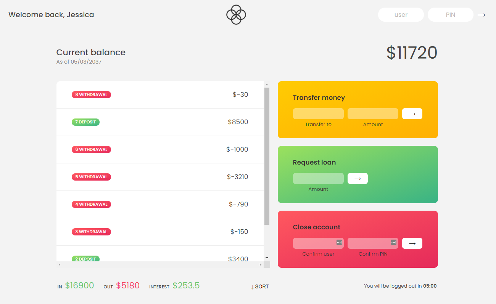

I'm an aspiring software engineer looking for an internship for
the summer of 2021. Here you will find a listing of the projects I
have worked in on Java, JavaScript, and Python throughout the past
few years. There is a mix of OOP, data structures, and algorithms
that I have used to make most of these projects.

The Bankist application is a pseudo-banking system where you can
login to one of the 4 accounts stored in the system, deposit money
to other accounts, request a loan within reason (i.e. you must
have at least 10% of the value you are asking for), and delete
accounts entirely. This logic behind this application involved a
lot of array manipulation
A* Pathfinding is an algorithm that finds a shortest path from a
start node to an end node. The algorithm must take into account
the black barriers put up between the start and node when finding
the shortest path. A visualization of the final path found can be
seen in purple above.
This application can take any .txt file located within the Java
Project folder and find how many times each word was used in that
.txt file. There is also a function to sort them from most used to
least used. This project uses a combination of HashMaps to assign
key/value pairs where the word is the key and the value is the
number of times the word has been used, and LinkedLists to contain
the elements in the sorting method. This has real-world use like
seeing if you are using a word too many times in an essay.
A text-based representation of the classic Blackjack card game.
The player and the dealer both start with 2 cards each. The player
can check is able to check their cards whenever, and sees all but
one of the dealer's cards at a time. The player will be prompted
to hit or stand until they decide to stand. The person closest to
reaching a total value of 21 between all their cards is the
winner.

Pig Game is a 2 player game where the objective is to score 100 by
rolling the dice and then holding to add it to your score. A
player can roll as many times as they desire, but when a 1 is
rolled, it switches to the next player's turn and that built up
score cannot be added. Javascript is used for DOM Maniuplation and
adding/removing CSS classes to certain elements.
A modified version of the classic Space Invaders game with full
control over the space ship and levels that get progressively
harder. Lives are lost by having the enemy ships reach the bottom
of the screen or the game is over automatically when your health
bar depletes entirely. More OOP is displayed here.
A recreation of the classic that everyone knows. This Tetris Clone
features classic music on a loop, full rotation controls, a score
counter, and options to pause or reset the game. Working
demonstration of OOP knowledge along with knowledge of ArrayLists,
exception handlers, GUIS, and image and sound loaders.
A random number 1-20 is generated when this game is opened and the
user must take a guess at what that number is. A message letting
you know if you are too high or low will appear on the page. When
you select the right number, the screen will turn green and you
will get a message saying that your guess is correct. This is the
first JavaScript project I did, and it introduced me to DOM
Manipulation and modifying CSS style through JavaScript.